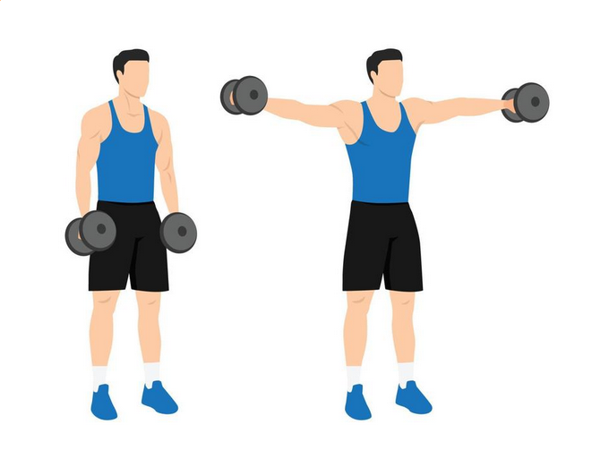
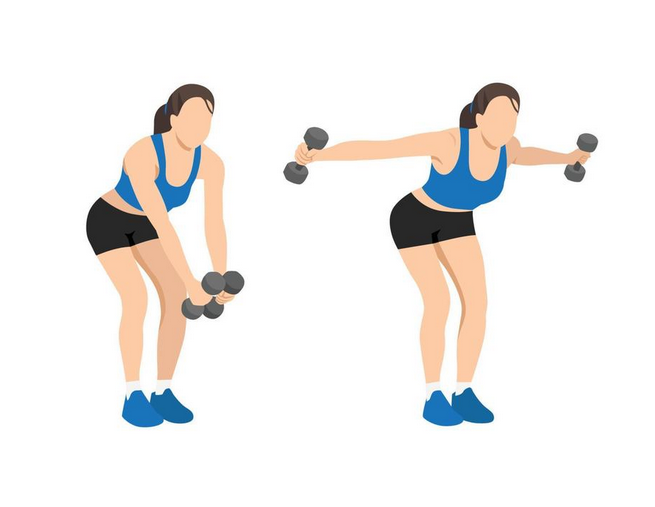
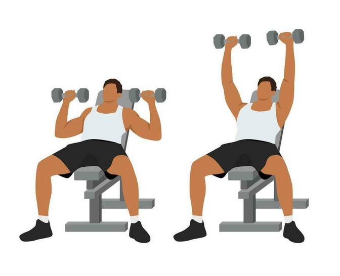
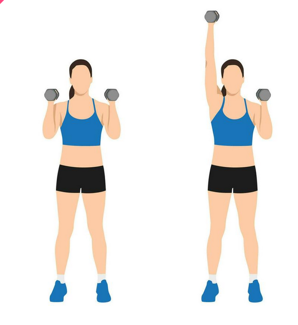
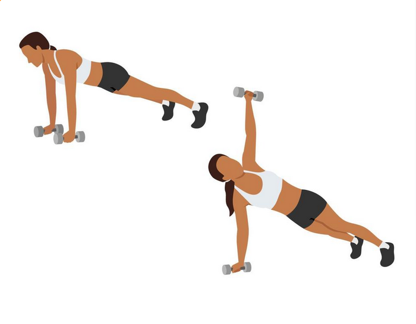
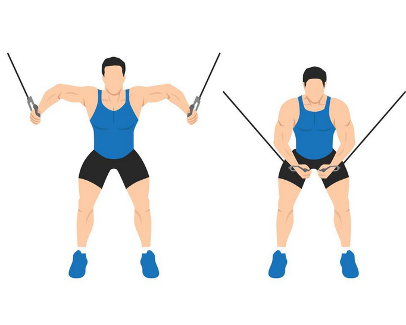
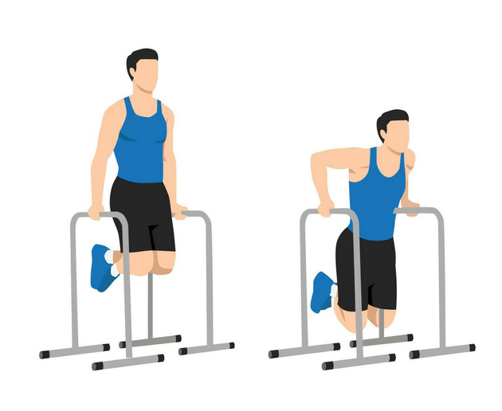
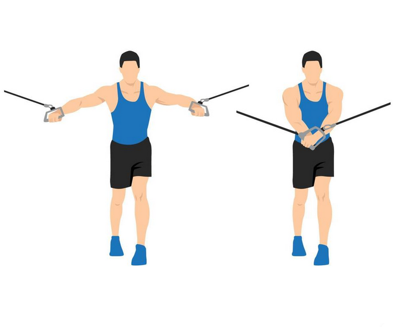
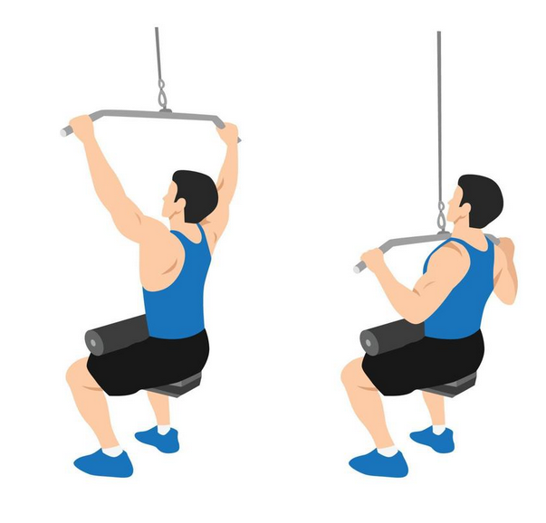
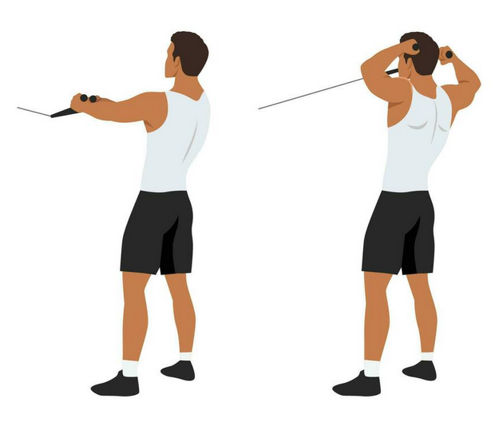

Without Equipment
-
Dumbbell Front Raise
The Dumbbell Front Raise strengthens primarily the shoulder (deltoids) but also works the upper chest muscles (pectorals). It is an isolation exercise for shoulder flexion. This exercise will help you build strength and definition in the front and sides of your shoulder.

-

Dumbbell Lateral Raise
Lateral raises are great for strengthening the lateral deltoids, but this is only one of three muscles that make up the deltoids. It's important to also strengthen the anterior deltoids and posterior deltoids, as well as other muscles in the shoulders, chest, and upper back.
-

Reverse Fly
During a reverse fly, you work the rhomboid muscles in your upper back and shoulder region. Strong upper back muscles help balance your shoulder strength and help protect your shoulder from injury.Feb
-

Seated Military Press
The seated press provides more stability to the back and shoulders which reduces the need for involvement from the core. This typically means people are able to lift more with the seated press and are able to sustain the correct form, both which means the delts are worked more efficiently.
-
Standing Dumbbell Shoulder Press
Standing presses might help you brace your core better, leading to more weight on your bar over time. On the other hand, performing seated shoulder presses takes less coordination and thus might help you get a better mind-muscle connection

-

One-arm Dumbbell Push Press
The one-arm-dumbbell push press is a great way to generate raw power as you hoist and push the weight above your head. Just like with grip strength, improving your raw power will improve your output in all of the other Strongman exercises that you do.
-

Plank Dumbbell Shoulder Raise
Raising your arms to the side in a plane-like position is also called a shoulder abduction. Lateral raises muscles worked primarily include the lateral deltoid muscles. Because of the rotating movement, you'll use your front deltoids and upper traps a little bit, too.
With Equipment
-

Cable Machine Lateral Raise
Cable lateral raises are a great exercise to give a balanced shape to your shoulders and make them look broader. There are three variations of cable lateral raises that you can use to spice up your shoulder workout and strengthen the different shoulder muscles. These are dead-stop, eccentric, and elevator cable raise.
-

Chest Dips
Dips are one of the best exercises you can do to increase the size and strength of your chest. They activate the outer portion of your pectorals to a greater degree than the bench press, which helps to build a wider chest.
-

Cable Flyes
Standing cable flyes are one of the best exercises for working the pectoralis major. Changing the angle of arm movement works different parts of this large muscle. Deltoid. This muscle covers the front and back of the shoulder joint.
-

Lat Pulldown
The lat pulldown is a back-focused exercise that's performed using a machine. It targets muscles such as the teres major, the pectoralis, and the latissimus dorsi.
-

Cable Face Pulls
The rear deltoids are the primary muscles targeted in the face pull exercise. Additionally, the rhomboids, which allow you to pinch the shoulder blades together, and the middle trapezius (upper back) also play a role in executing this move.